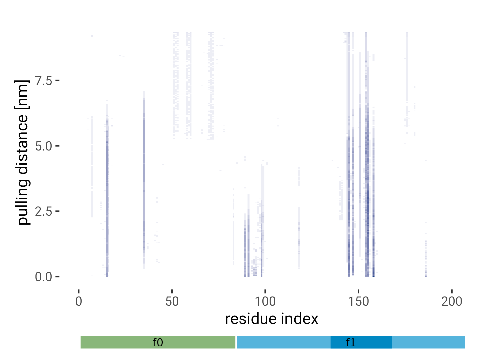
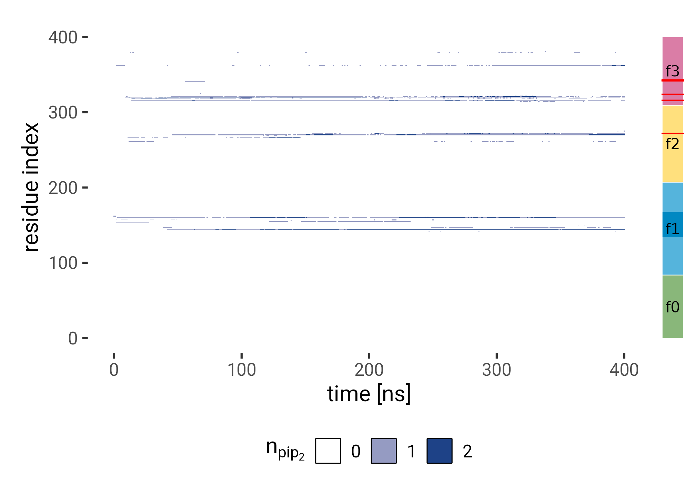

Code
source("./R/globals.R")
source("./R/functions.R")source("./R/globals.R")
source("./R/functions.R")tar_visnetwork(callr_arguments = list(show = FALSE))tar_load(data_path_prefix)
tar_load(CUTOFF)
tar_load(from_first_contact)
tar_load(interacting)
tar_load(sequence)
f0f1_run1 <- tar_read(f0f1_rot_sample_distances_per_run, branches = 1:60)
tar_load(rolling)
tar_load(stuck)
tar_load(ferm_interacting)
tar_load(ferm_annotation)
tar_load(ferm_colors)
tar_load(bool_colors)
tar_load(f0f1_pulling_smooth)
tar_load(f0f1_pulling_peaks)
tar_load(ferm_pip_sites)
tar_load(f0f1_pulling_interacting)anti_join(
expand_grid(run = 1:6, angle = seq(0, 354, 6)),
distinct(interacting, run, angle)
)# A tibble: 1 × 2
run angle
<int> <dbl>
1 4 348interacting |>
drop_na() |>
count(run, angle) |>
filter(n != max(n))# A tibble: 2 × 3
run angle n
<int> <int> <int>
1 2 204 39203
2 3 234 788anti_join(
expand_grid(frame = 0:200, i = 1:197),
interacting |>
filter(run == 2, angle == 204) |>
distinct(frame, i)
)# A tibble: 394 × 2
frame i
<int> <int>
1 143 1
2 143 2
3 143 3
4 143 4
5 143 5
6 143 6
7 143 7
8 143 8
9 143 9
10 143 10
# … with 384 more rowsinteracting |>
drop_na() |>
group_by(run, angle) |>
summarise(frame = max(frame)) |>
ungroup() |>
filter(frame != max(frame))# A tibble: 1 × 3
run angle frame
<int> <int> <int>
1 3 234 3paths <- c("{data_path_prefix}papers/paper-talin-loop/assets/blender/render-rotsample/frame0001.png",
"{data_path_prefix}papers/paper-talin-loop/assets/blender/render-rotsample/frame0004.png",
"{data_path_prefix}papers/paper-talin-loop/assets/blender/render-rotsample/frame0003.png",
"{data_path_prefix}papers/paper-talin-loop/assets/blender/render-rotsample/frame0002.png",
"{data_path_prefix}papers/paper-talin-loop/assets/blender/render-rotsample/frame0001.png") |> map_chr(glue)
render_png <- function(p) {grid::rasterGrob(png::readPNG(p))}
pngs <- map(paths, render_png)
plt <- from_first_contact |>
group_by(i, angle) |>
summarise(
n_pip = mean(n_pip)
) |>
ungroup() |>
complete(i = 1:197, angle = seq(0, 354, 6), fill = list(n_pip = 0)) |>
ggplot(aes(i, angle, fill = n_pip)) +
geom_raster() +
scale_fill_gradient(low = "white", high = HITS_BLUE) +
coord_cartesian(clip = "off", xlim = c(0, 207)) +
labs(
x = "residue index",
y = "angle [deg]",
fill = expression(bar(n)[pip2])
)
grobs <- ggplotGrob(plt)
plt <- plt +
guides(fill = guide_colorbar(barheight = unit(0.7, "grobheight", data = grobs$grobs),
frame.colour = "black"))
anot <- ggplot(ferm_annotation[1:3,]) +
aes(
ymin = 0, ymax = 10,
xmin = imin, xmax = imax,
fill = domain) +
geom_rect(show.legend = FALSE) +
geom_text(aes(y = 5, x = (imin + imax)/2, label = domain),
color = "black") +
theme_void() +
coord_cartesian(clip = "off", xlim = c(0, 207)) +
scale_fill_discrete(type = ferm_colors)
vmd <- wrap_plots(pngs, ncol = 1)
main <- (plt / anot) +
plot_layout(heights = c(20,1)) +
plot_annotation()
((vmd / plot_spacer()) | main) +
plot_layout(widths = c(1,10))
plt <- from_first_contact |>
group_by(i) |>
summarise(n_pip = mean(n_pip)) |>
left_join(sequence, by = "i") |>
ggplot(aes(x = i, y = n_pip)) +
annotate(geom = "rect",
xmin = 140, xmax = 164,
ymin = 0, ymax = Inf,
color = NA,
fill = "black",
alpha = 0.05) +
geom_col(aes(fill = PI),
alpha = 1,
width = 0.8,
show.legend = FALSE) +
geom_text(aes(label = res, color = PI),
fontface = "bold",
vjust = -0.2,
data = ~ filter(.x, n_pip > 0.1)) +
scale_color_gradient2(low = HITS_MAGENTA,
mid = "grey90", high = HITS_BLUE, midpoint = 7) +
scale_fill_gradient2(low = HITS_MAGENTA,
mid = "grey90", high = HITS_BLUE, midpoint = 7) +
scale_y_continuous(expand = expansion(mult = c(0, 0.1))) +
labs(y = expression(n[PIP[2]])) +
coord_cartesian(clip = "off", xlim = c(0, 207)) +
labs(
x = "residue index",
y = expression(bar(n)[PIP[2]]),
) +
theme(axis.text.x = element_text(angle = 45, hjust = 1))
grobs <- ggplotGrob(plt)
plt <- plt +
guides(color = guide_colorbar(barheight = unit(0.7, "grobheight", data = grobs$grobs),
frame.colour = "black"))
anot <- ggplot(ferm_annotation[1:3,]) +
aes(
ymin = 0, ymax = 10,
xmin = imin, xmax = imax,
fill = domain) +
geom_rect(show.legend = FALSE) +
geom_text(aes(y = 5, x = (imin + imax)/2, label = domain),
color = "black") +
theme_void() +
coord_cartesian(clip = "off", xlim = c(0, 207)) +
scale_fill_discrete(type = ferm_colors)
(plt / anot) +
plot_layout(heights = c(20,1)) +
plot_annotation()
plt <- interacting |>
group_by(frame, angle) |>
summarise(pip = mean(n_pip)) |>
ggplot(aes(angle, frame, fill = pip)) +
geom_raster() +
scale_fill_gradient(low = "white", high = HITS_BLUE) +
guides(color = guide_colorbar(barheight = 16)) +
labs(
fill = expression(bar(n)[PIP[2]]),
y = "time [ns]",
x = "angle [deg]"
)
grobs <- ggplotGrob(plt)
plt +
guides(fill = guide_colorbar(barheight = unit(0.7, "grobheight", data = grobs$grobs),
frame.colour = "black"))
f0f1_stickiness <- rolling |>
group_by(run, angle) |>
slice_max(time) |>
summarise(stuck = n_i > 0) |>
ungroup()
f0f1_time_ri <- interacting |>
group_by(run, angle, frame) |>
summarise(n_i = sum(n_pip > 0)) |>
ungroup() |>
left_join(f0f1_stickiness)
plt1 <- f0f1_time_ri |>
filter(!is.na(stuck)) |>
mutate(stuck = fct_rev(factor(stuck))) |>
ggplot(aes(frame, n_i, group = paste(run, angle), color = stuck)) +
geom_line(aes(alpha = stuck)) +
geom_smooth(aes(group = stuck, color = stuck), se = FALSE,
data = ~filter(.x, stuck == TRUE)) +
scale_color_manual(values = bool_colors, name = "retention") +
scale_alpha_manual(values = c(`TRUE` = 0.08, `FALSE` = 0.6)) +
labs(x = "time [ns]",
y = "# interacting residues") +
coord_cartesian(clip = "off") +
guides(color = "none", alpha = "none") +
theme(
plot.margin = unit(c(1, 0, 1, 1), "lines")
)
plt2 <- stuck |>
ggplot(aes(x = 0, fill = stuck, n, label = paste0(n))) +
geom_col(position = "stack") +
geom_text(vjust = 1.1, position = "stack", fontface = "bold", size = 3, color = "white") +
scale_x_continuous(breaks = NULL) +
scale_fill_manual(values = c( "grey30", HITS_MAGENTA, HITS_BLUE)) +
labs(x = "total", y = "", title = "") +
theme(
legend.position = "top",
axis.text = element_blank(),
axis.ticks = element_blank(),
plot.margin = unit(c(1, 1, 0, 0), "lines")
) +
guides(fill = guide_legend(title = ""))
(plt1 | plt2) +
plot_layout(widths = c(15, 1), guides = 'collect') &
theme(legend.position = "bottom")
plt <- f0f1_run1 |>
filter(r != 1) |>
ggplot(aes(r, y = stat(density))) +
geom_density(fill = HITS_BLUE, alpha = 0.6) +
geom_vline(xintercept = CUTOFF, lty = 2) +
annotate("text", x = CUTOFF, y = 1,
label = glue("r = {CUTOFF} nm"), hjust = -0.5,
fontface = "bold") +
labs(
x = "r [nm]",
y = "#",
caption = "r ≥ 1 not shown due to cutoff"
) +
coord_cartesian(xlim = c(0, 0.9))
plt
plt_contacts <- f0f1_pulling_interacting |>
group_by(run, frame) |>
summarise(contacts = sum(n_pip > 0)) |>
ggplot(aes(frame * 0.03, contacts)) +
geom_line(aes(group = run), alpha = 0.6) +
# geom_line(data = ~filter(.x, run == 4), aes(group = run), alpha = 0.6, color = HITS_MAGENTA) +
labs(x = "distance [nm]",
y = "# interacting residues"
)
plt_curves <- f0f1_pulling_smooth |>
ggplot(aes(time / 1e3 * 0.03, f)) +
geom_line(aes(group = run), alpha = 0.3) +
geom_smooth(aes(group = run), se = FALSE, color = HITS_BLUE) +
# geom_smooth(data = ~filter(.x, run == 4), aes(group = run), se = FALSE, color = HITS_MAGENTA) +
labs(x = "distance [nm]",
y = "force [pN]",
caption = "pulling rate: 0.03 nm/ns") +
coord_cartesian(ylim = c(0, 150))
(plt_contacts / plt_curves)
f0f1_pulling_interacting |>
group_by(run) |>
filter(frame == max(frame)) |>
summarise(sum(n_pip > 0))# A tibble: 6 × 2
run `sum(n_pip > 0)`
<dbl> <int>
1 1 0
2 2 0
3 3 0
4 4 15
5 5 0
6 6 0# loop: 135 to 168
df <- f0f1_pulling_interacting |>
arrange(run, frame, i) |>
mutate(loop = between(i, 135, 168)) |>
group_by(run, frame, loop) |>
summarise(contacts = sum(n_pip > 0)) |>
group_by(run, loop) |>
mutate(contacts = zoo::rollmean(contacts, 15, NA)) |>
pivot_wider(names_from = loop, values_from = contacts) |>
ungroup()
head_tail <- function(data, ...) {
bind_rows(
slice_max(data, ...),
slice_min(data, ...)
)
}
points <- df |>
filter(!is.na(`FALSE`), !is.na(`TRUE`)) |>
group_by(run) |>
slice_head()
arrows_end <- df |>
filter(!is.na(`FALSE`), !is.na(`TRUE`)) |>
group_by(run) |>
head_tail(frame, n = 2) |>
arrange(run, frame) |>
mutate(end = rep(1:(n() %/% 2), each = 2)) |>
filter(end == 2)
df |>
left_join(
f0f1_pulling_smooth |>
select(run, time, f) |>
mutate(frame = time %/% 1e3) |>
group_by(run, frame) |>
summarise(f = mean(f))
) |>
ggplot(aes(`TRUE`, `FALSE`, color = f, group = paste(run))) +
geom_path() +
geom_point(data = points, color = "black") +
geom_path(
aes(group = paste(run, end)),
color = "black",
data = arrows_end,
arrow = arrow(angle = 15, ends = "last", type = "closed",
length = unit(0.4, "lines")),
) +
scale_color_viridis_c(direction = -1) +
coord_equal() +
labs(
x = "loop contacts",
y = "non loop contacts",
color = "F [pN]"
)
df |>
ggplot(aes(`TRUE`, `FALSE`, color = frame , group = paste(run))) +
geom_path() +
geom_point(data = points, color = "black") +
geom_path(
aes(group = paste(run, end)),
color = "black",
data = arrows_end,
arrow = arrow(angle = 15, ends = "last", type = "closed",
length = unit(0.4, "lines")),
) +
scale_color_gradient(high = "#98cde9", low = "#003063") +
coord_equal() +
guides(color = "none") +
labs(
x = "loop contacts",
y = "non loop contacts",
color = ""
)
# rate: 0.03 nm/ns
rate <- 0.03
plt <- f0f1_pulling_interacting |>
group_by(frame, i) |>
summarise(n_pip = mean(n_pip)) |>
mutate(d = frame * rate) |>
ggplot(aes(i, d, fill = n_pip)) +
geom_raster() +
# facet_wrap(~run) +
scale_fill_gradient(low = "white", high = HITS_BLUE) +
coord_cartesian(clip = "off", xlim = c(0, 207)) +
guides(fill = "none") +
labs(y = "pulling distance [nm]",
x = "residue index"
# caption = "pulling rate: 0.03 nm/ns"/
)
anot <- ggplot(ferm_annotation[1:3,]) +
aes(
ymin = 0, ymax = 10,
xmin = imin, xmax = imax,
fill = domain) +
geom_rect(show.legend = FALSE) +
geom_text(aes(y = 5, x = (imin + imax)/2, label = domain),
color = "black") +
theme_void() +
coord_cartesian(clip = "off", xlim = c(0, 207)) +
scale_fill_discrete(type = ferm_colors)
(plt / anot) +
plot_layout(heights = c(20,1)) +
plot_annotation()
plt <- ferm_interacting |>
filter(run == 6) |>
ggplot(aes(frame, i, fill = n_pip)) +
geom_raster() +
scale_fill_gradient(low = "white", high = HITS_BLUE, breaks = c(0, 1, 2, 3)) +
guides(fill = guide_legend(show.limits = TRUE)) +
labs(
x = "time [ns]",
y = "residue index",
fill = expression(n[pip[2]])
) +
theme(legend.position = "bottom", legend.key = element_rect(color = "black")) +
lims(y = c(0, 400))
anot <- ggplot(ferm_annotation) +
aes(
xmin = 0, xmax = 10,
ymin = imin, ymax = imax,
fill = domain) +
geom_rect(show.legend = FALSE) +
geom_hline(data = ferm_pip_sites, aes(yintercept = ri), color = "red") +
geom_text(aes(x = 5, y = (imin + imax)/2, label = domain), color = "black") +
theme_void() +
scale_fill_discrete(type = ferm_colors)
(plt | anot) +
plot_layout(widths = c(25, 1)) +
plot_annotation()
ferm_interacting |>
filter(run != 7) |>
ggplot(aes(frame, i, fill = n_pip)) +
geom_raster() +
facet_wrap(~ run, labeller = label_both) +
scale_fill_gradient(low = "white", high = HITS_BLUE, breaks = c(0, 1, 2, 3)) +
guides(fill = guide_legend(show.limits = TRUE)) +
labs(
x = "time [ns]",
y = "residue index",
fill = expression(n[pip[2]])
) +
theme(legend.position = "bottom",
panel.background = element_rect(color = "black", fill = NA)) 
plt <- ferm_interacting |>
group_by(i) |>
summarise(n_pip = mean(n_pip)) |>
left_join(sequence) |>
ggplot(aes(x = i, y = n_pip)) +
annotate(geom = "rect",
xmin = 140, xmax = 164,
ymin = 0, ymax = Inf,
color = NA,
fill = "black",
alpha = 0.05) +
geom_col(aes(fill = PI),
alpha = 1,
width = 0.8,
show.legend = FALSE) +
geom_text(aes(label = res, color = PI),
fontface = "bold",
vjust = -0.2,
data = ~ filter(.x, n_pip > 0.1)) +
scale_color_gradient2(low = HITS_MAGENTA,
mid = "grey90", high = HITS_BLUE, midpoint = 7) +
scale_fill_gradient2(low = HITS_MAGENTA,
mid = "grey90", high = HITS_BLUE, midpoint = 7) +
scale_y_continuous(expand = expansion(mult = c(0, 0.1))) +
scale_x_continuous(breaks = seq(0, 400, 50)) +
labs(y = expression(n[PIP[2]])) +
coord_cartesian(clip = "off", xlim = c(0, 400)) +
labs(
x = "residue index",
y = expression(bar(n)[PIP[2]])
) +
theme(axis.text.x = element_text(angle = 45, hjust = 1))
grobs <- ggplotGrob(plt)
plt <- plt +
guides(color = guide_colorbar(barheight = unit(0.7, "grobheight", data = grobs$grobs),
frame.colour = "black"))
anot <- ggplot(ferm_annotation) +
aes(
ymin = 0, ymax = 10,
xmin = imin, xmax = imax,
fill = domain) +
geom_rect(show.legend = FALSE) +
geom_vline(data = ferm_pip_sites, aes(xintercept = ri), color = "red") +
geom_text(aes(y = 5, x = (imin + imax)/2, label = domain),
color = "black") +
theme_void() +
coord_cartesian(clip = "off", xlim = c(0, 400)) +
scale_fill_discrete(type = ferm_colors)
(plt / anot) +
plot_layout(heights = c(20,1)) +
plot_annotation()